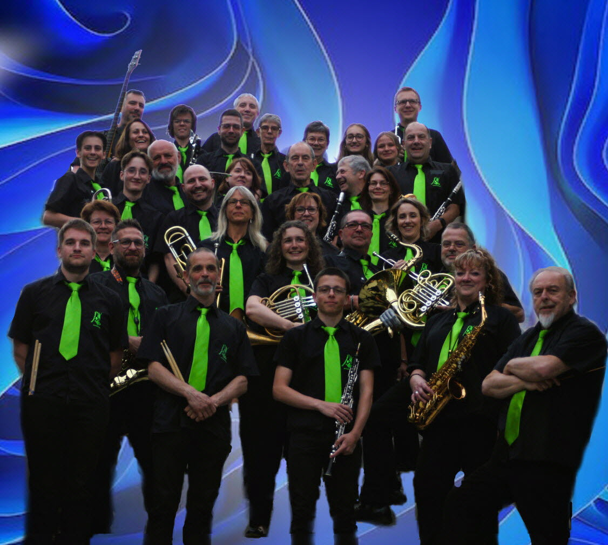

Une longue histoire
Plus de 2 siècles
de musique vivante
De ses origines à ses projets actuels, l'Harmonie de Nuits-Saint-Georges a traversé les époques en restant fidèle à ses valeurs : partage, transmission et passion musicale.
1815
Fondation de l'Harmonie
Ce n'est qu'au commencement du XVIIIe siècle que l'harmonie se propage en Bourgogne. Elle prend essor dans notre ville beaucoup plus tard avec Charles Walteman, comme professeur. Tompette-major d'un régiment de Hussards austro-hongrois, il s'installa à Nuits St Georges après l'invasion de 1815, fût le premier qui y enseigna son art et créa la première société musicale. Il donna des leçons de piano et de violon qui furent très suivies par les classes aisées de l'époque mais il exerçait surtout sa virtuosité sur le trombone qu'il jouait avec la perfection d'un maître.

1815-1906
Succession de nombreux chefs
Tout au long du XIXe siècle, de nombreux chefs se sont relayer, que ce soit pour une petite année, ou pour plus de 40 ans.

1907-1950
Georges Camus : Traverser les guerres en musique
Chef d'orchestre aimé et respecté durant plus de 43 ans, Georges Camus a su fédérer ses musiciens pour maintenir le souffle de l'harmonie à travers les deux conflits mondiaux.


1978-1992
Jacques Cacheux : Du vin à la musique
Jacques Cacheux était un vigneron renommé, célèbre pour son domaine "Jacques Cacheux" à Vosne Romanée. Aujourd'hui encore, l'harmonie compte dans ses rangs des musiciens historiques qui ont eu la chance de jouer sous sa direction.


1996
Nouveau chef d'orchestre : Fabrice Boury
En 1996, Fabrice Boury est directeur de l'école de musique intercommunale, un vivier de l'harmonie musicale. Cela fait maintenant plus de 30 ans qu'il dirige l'harmonie avec brio et sympathie, tout en restant ferme quand il le faut.
Aujourd'hui
Plus de 35 musiciens actifs
L'Harmonie compte aujourd'hui une trentaine de musiciens et continue de transporter cette passion sur le territoire à travers concerts, défilés et animations tout au long de l'année.
